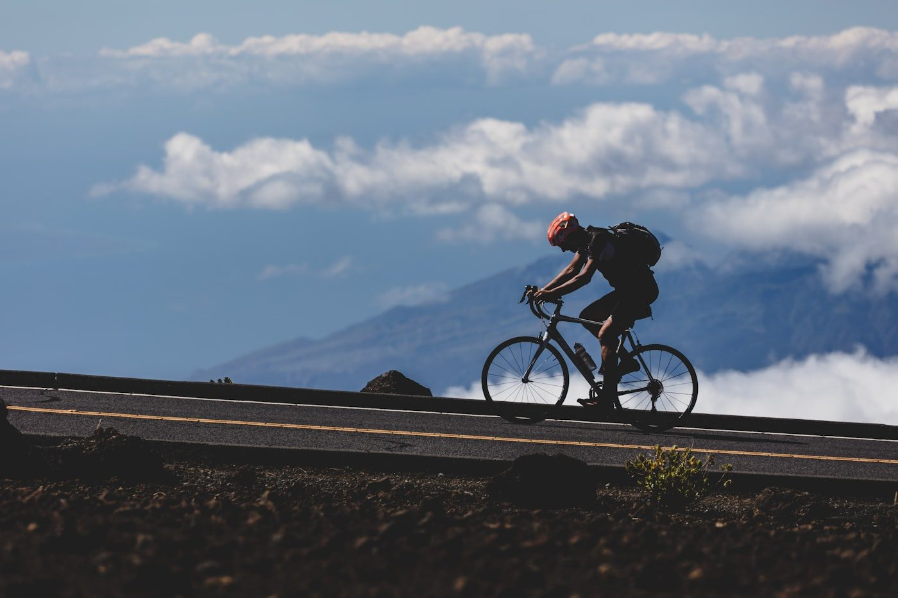
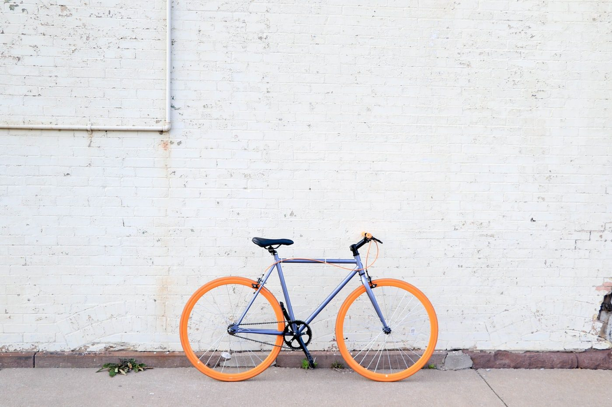
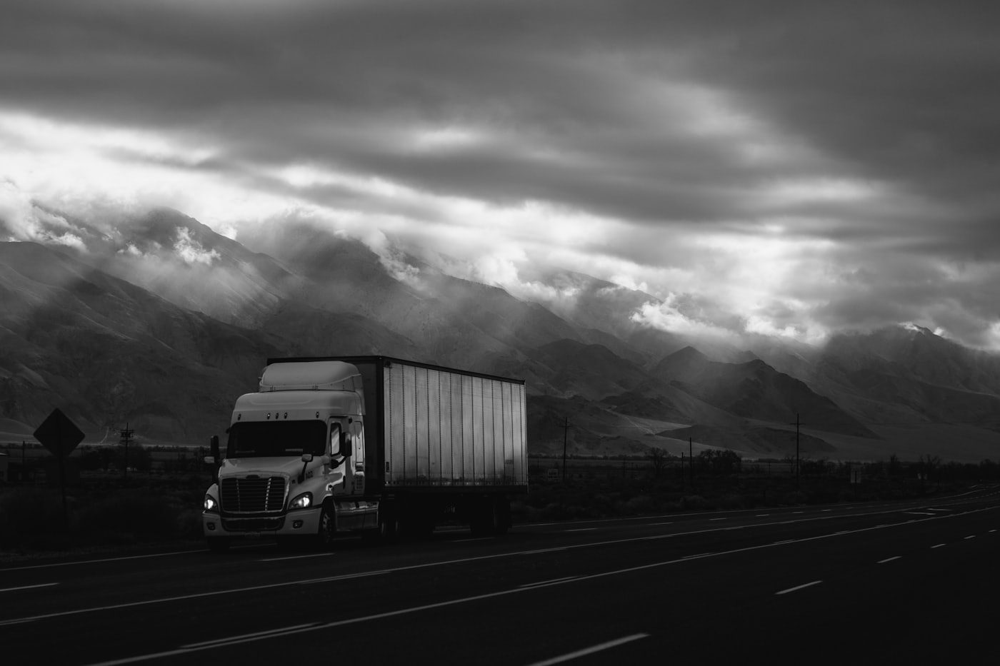
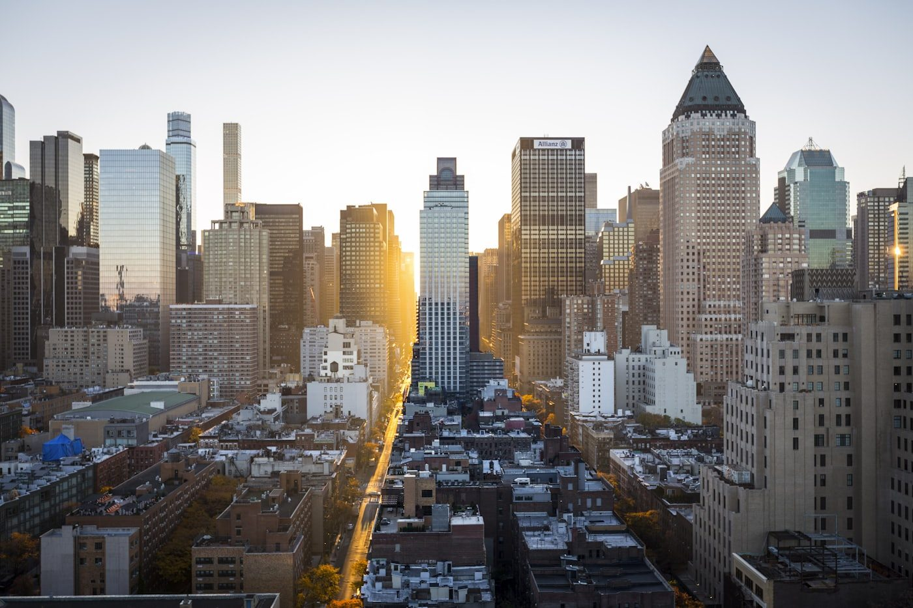
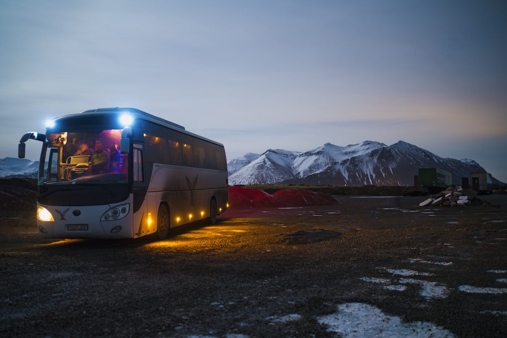
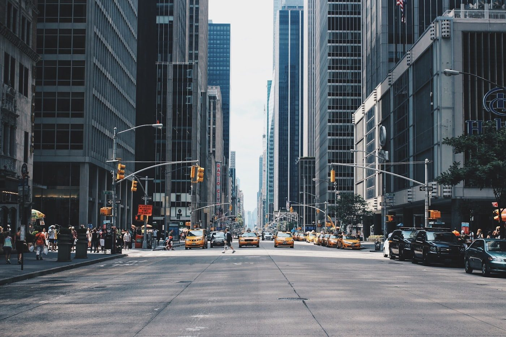
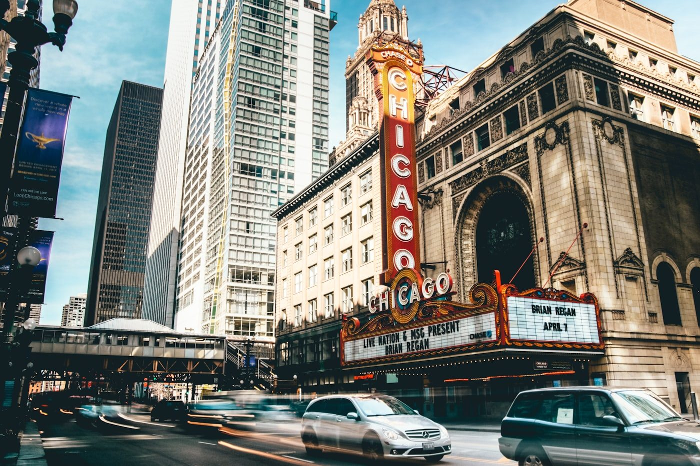
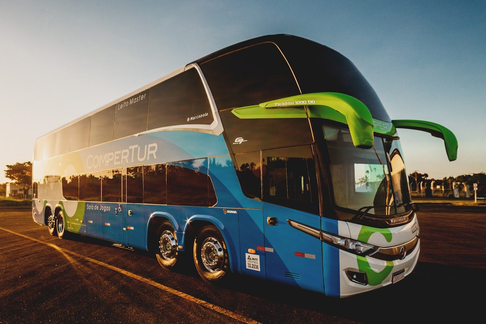
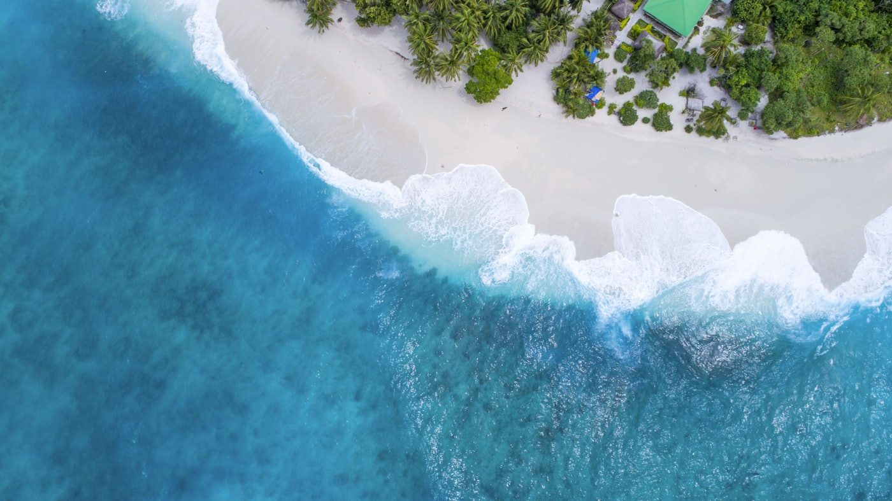
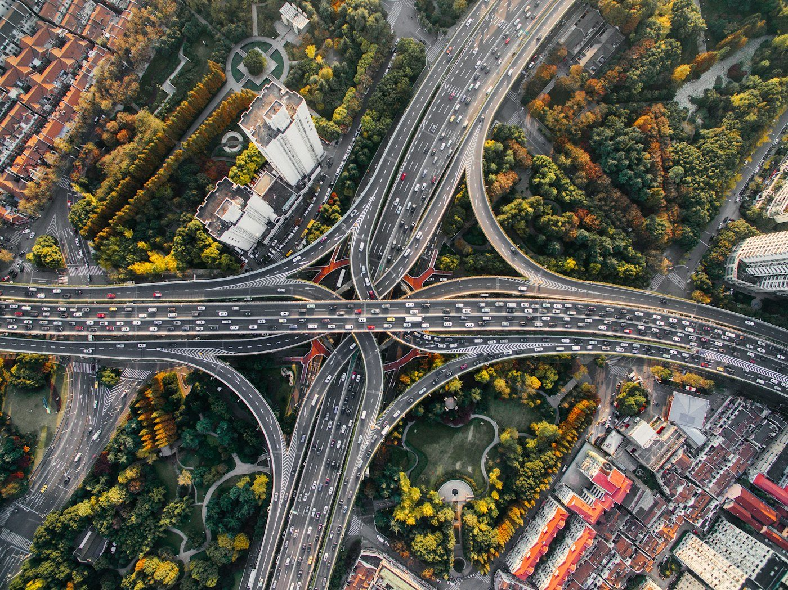

Trayectoria
Cartera de proyectos
Más de 300 estudios y proyectos desde 2011, a lo largo de todo Chile. Una selección representativa por ámbito de especialidad.

Teleférico Cerros de Talcahuano

Ciclovías San Fernando

Ciclovías Calama

Ciclovías Quilpué y Villa Alemana

Ciclovías Arica

Interconexión Alto Centro, Copiapó

Accesibilidad Sector Sur, Arica

Gómez Carreño – Jardín del Mar, Reñaca

Acceso Norte / Av. O'Higgins, San Fernando

PTU Valdivia · Etapa III

Circunvalación Centro, Ancud

Conectividad Oriente–Poniente, Coquimbo

Puente Artificio, La Calera

La Tirana y Cerro Dragón, Iquique

Costanera Chinchorro, Arica

PTU Talca y Maule · Etapa I

Edmundo Eluchans, Viña–Concón

Accesibilidad Concepción–Penco
Transporte públicoPlan de Transporte de Linares · Etapa I

Linderos–Azolas y Centro de Arica

Ampliación Av. La Compañía, Rancagua

Gestión de Tránsito, Copiapó

Terminal Rodoviario, Punta Arenas

SCAT Ciudad de Linares

Eje Bueras / Av. Francia, Valdivia

Gestión de Tránsito, Arica

Mejoramiento Ruta 160, San Pedro de la Paz
FerroviarioEstudio Ferroviario Coronel–Lota (FESUR)

Costanera Andalién Oriente, Penco

Interconexión Santiago–Valparaíso

Concesión Ruta 68 Pajaritos–Placilla

Demanda Ruta 5 Chonchi–Quellón
No hay proyectos en esta categoría por ahora.
32 estudios del registro de experiencia (Acreditación MOP). Imágenes referenciales por categoría — se reemplazan por fotografía propia de cada obra.
Conversemos
¿Tu proyecto podría ser el próximo caso?
Trabajemos juntos desde la etapa de perfil hasta la ingeniería de detalle.